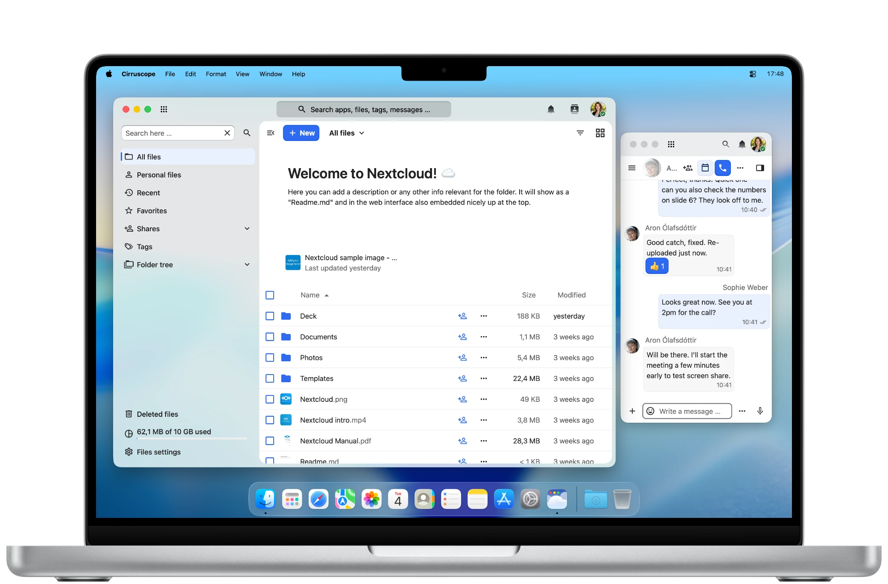

Pensé pour macOS
Conçu entièrement en Swift et AppKit, Cirruscope a l'apparence et le comportement d'une app qui a sa place sur ton Mac.
Cirruscope transforme ton Nextcloud en une application macOS rapide et native – avec de vraies fenêtres, des notifications natives, et sans le désordre des onglets de navigateur.

Conçu entièrement en Swift et AppKit, Cirruscope a l'apparence et le comportement d'une app qui a sa place sur ton Mac.
Il vit dans ton Dock et ta barre de menus et se bascule avec Cmd-Tab – pas un onglet de navigateur déguisé.
Ouvre plusieurs fenêtres, déplace-les entre les espaces, et utilise Mission Control et Stage Manager comme avec n'importe quelle app native.
Une fine couche native autour de WebKit garantit un lancement rapide et une empreinte légère – sans moteur de navigateur à trainer.
Le contenu s'étend jusque dans la barre de titre pour une vue immersive et épurée de tes fichiers.
La barre latérale de Nextcloud se comporte comme une vraie barre latérale macOS – translucide, réductible, cohérente avec ton système.
Les matériaux des fenêtres captent le bureau derrière elles : Nextcloud s'intègre à ton espace de travail au lieu de se poser dessus.
Épingle les fichiers, dossiers et apps que tu ouvres le plus dans un favori rapide accessible en un clic.
Les notifications Nextcloud arrivent via le Centre de notifications, comme toute autre app Mac.
Cirruscope se branche sur l'app Raccourcis de macOS : Nextcloud devient une étape des automatisations que tu construis déjà. D'autres actions arrivent.
Cherche directement dans Spotlight le contenu Nextcloud auquel accéder, sans passer par l'app.
Les envois et téléchargements passent par la gestion native de macOS, avec la progression dans le Dock et le dossier Téléchargements.
Fonctionne avec n'importe quelle instance Nextcloud – ton propre serveur autohébergé ou celui d'un hébergeur de confiance.
Découvre comment Cirruscope s'intègre au déploiement de masse, aux profils de configuration et aux versions personnalisées pour les entreprises.
Cirruscope pour les entreprises →